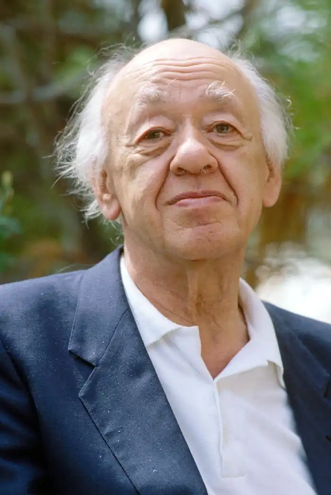
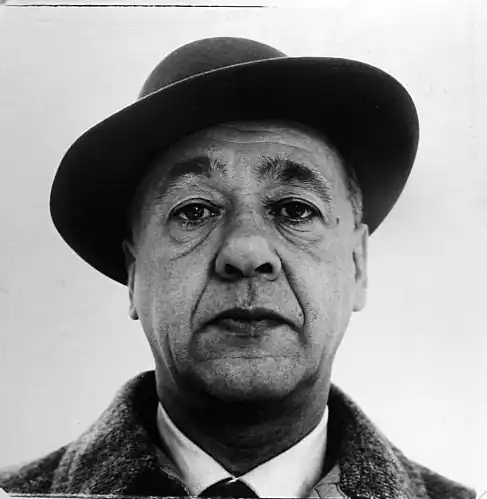

ЕЖЕН ЙОНЕСКО
(народився 1912)
Ежен Йонеско, французький драматург, народився 26 листопада 1909 року в Румунії, у місті Слатіно. Помер 28 березня 1994 року в Франції, у місті Париж. Його батько, адвокат за професією, був румуном, мати — француженкою. Ледь дитині виповнився рік, родина переїхала до Франції. Рідною мовою для Ежена Йонеско стала французька. І своєю батьківщиною він завжди вважав і продовжує вважати не Румунію, а Францію. Спочатку через негідне ставлення батька, який кинув родину, залишивши її напризволяще, і протягом багатьох років не подавав про себе ніяких звісток; з роками цей вибір отримав і щось на зразок політичного обґрунтування. У Франції, спочатку в Парижі, потім у провінції, майбутній письменник прожив до чотирнадцятилітнього віку, після чого йому довелося знову повернутися до Румунії, оскільки через розлучення батьків права на дітей одержав батько. Там хлопець закінчив школу, потім філологічний факультет Бухарестського університету й набув спеціальності викладача французької мови й літератури. У 1936 році Йонеско одружився, а в 1938 році йому вдалося домогтися стипендії для написання у Франції дисертації "Тема гріха й смерті у французькій поезії", і він удруге, тепер уже назавжди, покинув країну, у якій народився. Наукова праця була для нього лише приводом для еміграції: Румунія того часу впевнено йшла шляхом фашистської диктатури, і дихати там ставало усе нестерпніше. У Франції спочатку життя складалося нелегко: Йонеско змінив кілька професій, найдовше пропрацювавши коректором у марсельському юридичному видавництві. До літературної творчості Ежен Йонеско прилучився ще в Румунії, почавши писати спочатку вірші, потім критичні статті. Про драматургію він не думав і неодноразово заявляв, навіть ставши вже відомим драматургом, що ніколи не любив театр. Тому до справжнього свого покликання прийшов не відразу. Вирішивши в 1948 році вивчити англійську мову, він узяв самовчитель і став вчитуватися в діалоги якоїсь уявлюваної англійської пари. Раптом у нього сяйнула думка, який величезний комічний і сатиричний заряд може нести в собі повсякденна розмова пересічних людей. Із цих діалогів він, наприклад, довідався, що у тижні сім днів, що стеля перебуває вгорі, а підлога, відповідно, унизу, а також безліч інших таких же непорушних істин, банальностей, що відбилися в діалогах повсякденної мови. Це наштовхнуло Йонеско на думку написати власні варіації на цю тему. Внаслідок подібних вправ з'явилася одноактна п'єса — точніше, "антип'єса", як автор зазначив цей жанр, за назвою "Лиса співачка", що в 1950 році була поставлена в одному маленькому паризькому театрі. Та перша постановка успіху не мала, але на автора п'єси звернули увагу критики, які стали регулярно висвітлювати все, що виходило з-під його пера, охрестивши його родоначальником "театру абсурду". Відтоді його біографія повністю злилася з хронологією творчості. Кожна нова постановка його п'єс ставала важливою подією паризького театрального життя. А Еженові Йонеско відтепер залишалося тільки писати їх, одну за одною, поступово набуваючи світової слави. У 1970 році його обрали членом Французької Академії. Його твори перекладалися багатьма мовами й ставилися на сценах у багатьох країнах. Буржуазне суспільство Йонеско, природно, завжди критикував і продовжує критикувати. Однак робить він це насамперед тому, що не може не критикувати будь-яке суспільство. Адже суть творчості й особистості Ежена Йонеско — це антиконформізм. До речі, Неприязнь його до власного батька значною мірою виправдовувалась ще й тим, що відомий румунський адвокат був втіленням конформізму, в 30-і роки віддано слугував фашистській диктатурі, а десять років потому — з тією ж готовністю — комуністичній диктатурі. На відміну від нього, Йонеско вже в ранні роки виробив у собі звичку думати не так, як інші, звичку жити серед людей вільною людиною, не поступаючись своєю сутністю. Набувши один раз духовні й моральні орієнтири, він уже більше не змінював їх. Що ж стосується абсурду Йонеско, то спочатку він не був пов'язаний з тим філософським абсурдом, що його Сартр і Камю успадкували від К'єркегора. Він народжувався з уважного розгляду повсякденного людського, переважно обивательського, існування. У Йонеско є чудове уміння втілювати в мистецтві повсякденне; підносячи його до рівня загальнолюдського, вічного. Підносячи, але одночасно й окарикатурюючи, витягуючи епізоди з довгого ланцюга своїх і чужих внутрішніх переживань і перетворюючи їх на трагікомедію. Драматургію Йонеско прийнято ділити на два періоди. Спочатку в п'єсах переважав критичний, провокаційний початок. Будучи абстракціоністськими, зі звичайними театральними умовностями, вони виглядали, як революційні й подобалися критикам лівої орієнтації, які поспішили зарахувати Йонеско до когорти антибуржуазних письменників. Ці критики дуже помилялися, адже Йонеско прагнув скоріше відродити "чисте" мистецтво, вільне від будь-якої політики й будь-якої ідеології, вільне від брехтівсько-сартрівської дидактики й ангажованості. Найважливішим і найцікавішим у мистецтві Йонеско завжди вважались його відторгненість і примарність. І його власні п'єси народжувалися не з ідей, а з реплік, що подіяли на уяву автора, випадкових образів, сновидінь. Йонеско не любив театр, але з дитинства обожнював лялькові вистави. Може, саме через це персонажі його перших п'єс, таких, як "Лиса співачка" (1948), "Стільці" (1951), "Жертви боргу" (1952), "Амедей, або Як від нього позбутися" (1953), такі безликі й роботоподобні, так схожі на маріонеток, висловлюються такою мовою, не здатні висловити думки, живуть в атмосфері гротеску й беруть участь у дії, що не розвивається, а йде по колу або спрямовується до якої-небудь абсурдної, пародійної розв'язки. Однак, по суті, абсурд навіть тих перших п'єс Йонеско був тільки уявним. Той абсурд лише оголював нерв життя, дозволяв глянути на все довкола по-іншому, помітити в людях їхні комічні риси. І одночасно підкреслити трагізм їхнього існування. В кінцевому підсумку Йонеско був змушений привселюдно відмежуватися від приписуваних йому ідеологічних намірів, а тому і його творчість, і він сам, що раніше піддавалися нападкам тільки правих ревнителів традицій, стали об'єктами нападок і лівої критики. Ця атмосфера полеміки неабияк сприяла еволюції творчості Йонеско. Гуманізм драматурга став виявлятися в його п'єсах усе сильніше, а самі вони стали більш видовищними. Фантастичний початок у них навіть підсилився, але, попри це, вони стали якщо не більш реалістичними — скоріше вже символістськими,— та більш зрозумілими. Почасти завдяки тому, що Йонеско випустив на сцену щось подібне до самого себе, наївного й мужнього Беранже, який відстоює права особистості в боротьбі з суспільством, котре прагне його розчавити. Уперше цей персонаж з'являється в 1957 році, у п'єсі "Убивця за покликом", де він, власне кажучи, персоніфікує людину взагалі, людину, якій протягом всього її життя загрожує насильство, ненависть, смерть. Автор не відмовився від своїх критичних спостережень за повсякденною мовою, від комічних ефектів, що виходять із мовних кліше, від двозначних виразів, від ковзання змісту, від асонансів і алітерацій, якими вирізнялися його ранні п'єси, але наприкінці 60-х років вони ніби відійшли на другий план. Попередня мова перетворилася на тло, що визначало тональність і створювало атмосферу, а крізь неї стала пробиватися більш гнучка, ліричніша мова, насичена образами, роздумами, питаннями, мова набагато класичніша, аніж та, що була раніше. Завдяки Беранже читач і глядач довідалися з п'єс Йонеско про проблеми, що непокоять автора: про труднощі буття ("Убивця за покликом"), про те, як він боїться смерті ("Король умирає", 1962), про те, як йому хотілося б перебороти земне тяжіння людської долі ("Небесний пішохід", 1962), про його страх перед тоталітаризмом ("Носоріг", 1960). "Носоріг" Життя людей сповнене проявів, які при уважнішому розгляді можуть здатися нелогічними чи навіть абсурдними. Особливо це вражає, коли йдеться про явища суспільного життя, коли кожна окрема людина діє за законами особистої логіки, а в поєднанні виходить щось майже безглузде. Глобальні політичні експерименти XX сторіччя неодноразово закінчувалися трагедіями цілих народів, вони здійснювалися на очах письменників, котрі бачили протиріччя між ідеями та їх втіленням, і були свідками того, як великі маси людей, об'єднавшись, робили речі, несумісні зі здоровим глуздом, які ніколи не вчинили б поодинці, а потім наївно жахалися і твердили, що всі вони нічого не знали й не розуміли. Не випадково виник особливий художній напрям, що зосередив свою увагу на висвітленні саме цього моменту людського існування. Театр абсурду, одним з найяскравіших представників якого є Ежен Йонеско, порушує проблеми суспільно-філософського плану, змушує подивитися на світ з цього нового ракурсу крізь скло драматургічних засобів. У п'єсах театру абсурду відбувається те, чого ніби ніколи не може бути. Як Йонеско, написавши "Носорога", ніби зненацька перетворився на одного з найбільш яскраво виражених політичних письменників? У цій п'єсі він розповів, як на вулицях якогось провінційного містечка раптом стали з'являтися невідомо звідки носороги. Потім з'ясувалося, що на носорогів перетворюються самі жителі містечка, зокрема й колеги Беранже. У них виростав ріг, тіло покривалось твердою шкірою, і вони перли напролом, розтрощуючи на своєму шляху все, що хоч скільки-небудь відрізнялося від них самих. Зрештою, Беранже залишився в місті єдиною людиною, яка не побажала перетворитися на носорога. У "носороговій" хворобі проступають дві основні політичні чуми нашого століття: фашизм і комунізм. У п'єсі Йонеско "Носороги" звичайні мешканці пересічного міста починають перетворюватися на носорогів, але це — лише образ, що дозволяє узагальнити сам принцип втрати людьми людської подоби, яка, в свою чергу, є закономірним результатом тоталітарного суспільного устрою. Не має значення, якого саме: художній прийом робить узагальнення універсальним. Коли цю п'єсу було поставлено вперше, більшість глядачів і критиків вважали, що йдеться про націонал-соціалізм, але Йонеско спростовував подібне спрощене тлумачення.